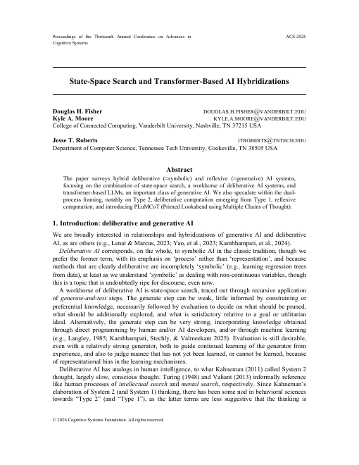

Special track at FLAIRS-40 (FLAIRS 2027), the 40th International Florida AI Research Society Conference · St. Pete Beach, FL · May 24–27, 2027
Deliberative and Generative AIHybrids and Foundations
A call for papers on systems that combine state-space search with transformer-based generation, and on how deliberative, Type 2 behavior relates to, and might emerge from, generative, Type 1 computation. Abstracts are due January 22, 2027.
- Conference
- FLAIRS-40, May 24–27, 2027
- Location
- St. Pete Beach, Florida, USA
- Proceedings
- Florida Online Journals, indexed in DBLP and Scopus
- Review
- Double-blind, by the track program committee
The call
Deliberative AI, the classical, symbolic tradition of state-space search, proceeds through recursive generate-and-test cycles: candidates are proposed, evaluated, pruned, and refined toward a goal. Generative AI, epitomized by transformer-based large language models, is instead characterized by a weak or trivial test step, producing outputs by sampling from learned conditional probability distributions.
A growing body of work treats these paradigms as complements rather than competitors. Search can structure and constrain LLM generation, and LLMs can serve as flexible components within a broader search process: as generators of successors, as scorers, or as tie-breakers. At the same time, an important question remains largely open: how, if at all, does deliberative, Type 2 behavior emerge from a fundamentally generative, Type 1 system?
Following State-Space Search and Transformer-Based AI Hybridizations (Fisher, Moore, and Roberts, ACS 2026), this special track invites papers that explore, build, evaluate, or theorize about hybrid architectures combining state-space search and transformer-based generation. It equally invites papers on the foundational question of how Type 1 and Type 2 processing relate to and give rise to one another. We welcome systems papers, empirical studies, and position or theoretical contributions.
- How can LLMs serve as generators or evaluators within classical search algorithms?
- How can search principles improve or control LLM decoding?
- What is the theoretical relationship between LLM inference and generic state-space search?
- By what mechanisms might a generative system come to behave deliberatively?
Topics of interest
We see two ends of a spectrum as especially interesting and welcome work anywhere along it: building working hybrid architectures at one end, and characterizing Type 1 and Type 2 processing at the other.
Hybrid architectures
Search and generation working together
- Proposer-verifier, generate-and-test and LLM-modulo architectures pairing LLMs with symbolic checkers, solvers or simulators
- LLM-guided search for planning, routing, program synthesis and mathematical proof
- Retrieval- and generation-augmented reasoning (RAG and GAR) as search-adjacent architectures
- Neurosymbolic integration, such as concept nets or commonsense graphs paired with generative reasoning
- Applications in mathematics, transportation and robotics planning, scholarly and bibliographic reasoning, and interactive narrative
Search inside generation
Where the two meet in a single algorithm
- Search-structured decoding: beam search, lookahead and Monte Carlo-style rollouts applied to LLM generation
- Scoring and filtering of generated candidates, including self-assessment, auxiliary discriminative models and tool-based scoring
- Reinforcement learning that folds evaluative, test-like signal back into generative models
- Computational cost and efficiency trade-offs in hybrid search-generation systems
Foundations
What the categories mean and how they relate
- Theoretical and empirical characterizations of Type 1 and Type 2 processing
- How Type 2 behavior might emerge from a Type 1 substrate, in theory or as demonstrated empirically
- Evidence for latent planning or lookahead within transformer representations
- Connections to cognitive architectures and dual-process theories of cognition
These topics are examples, not limits. If your work bears on the combination, unification or comparative analysis of search-based and generation-based AI, it belongs here.
Important dates
- Abstract registrationRequired: a full paper cannot be submitted without a registered abstract.
- Full and short paper submission
- Paper acceptance notification
- Poster paper submission2 pages plus references.
- Poster notification
- Camera-ready papers, author registration and early registration
- Conference in St. Pete Beach, Florida
All deadlines are 23:59 Anywhere on Earth (AoE). The FLAIRS-40 important dates page is authoritative if anything changes.
How to submit
-
Prepare an anonymized PDF
Use the FLAIRS-40 author template from the FLAIRS-40 call for papers. Review is double-blind, so remove author names, affiliations and identifying self-references.
-
Register your abstract on EasyChair by January 22
Go to the FLAIRS-40 EasyChair site, start a new submission, and select the track Deliberative and Generative AI: Hybrids and Foundations. Submissions sent to the main track are not reviewed by this track's committee.
-
Upload the full paper by February 1
Add the PDF to your registered submission. Poster papers follow the later March 15 deadline.
- Submissions must be original and not under review elsewhere during the FLAIRS review period.
- At least one author of each submission must be available to serve as a reviewer.
- Each accepted paper needs an author registration, and at least one author must present in person.
- Full papers that are not accepted may still be accepted as short papers or posters.
The FLAIRS-40 call for papers has the complete submission rules.
The motivating paper

Douglas H. Fisher, Kyle A. Moore, and Jesse T. Roberts. 2026. State-Space Search and Transformer-Based AI Hybridizations. In Proceedings of the Thirteenth Annual Conference on Advances in Cognitive Systems (ACS-2026).
Abstract
The paper surveys hybrid deliberative (≈symbolic) and reflexive (≈generative) AI systems, focusing on the combination of state-space search, a workhorse of deliberative AI systems, and transformer-based LLMs, an important class of generative AI. We also speculate within the dual-process framing, notably on Type 2, deliberative computation emerging from Type 1, reflexive computation; and introducing PLuMCoT (Primed Lookahead using Multiple Chains of Thought).
The paper casts LLM generation as a form of greedy search, shows where LLMs can implement the components of a search process, and closes by asking how Type 2 computation might emerge from Type 1. It frames the track's questions, but prior familiarity with it is not expected of submitters.
Camera-ready version, hosted here until the ACS-2026 proceedings are online. © 2026 Cognitive Systems Foundation.
Organizers and contact
- Jesse T. RobertsDepartment of Computer Science, Tennessee Tech Universityjtroberts@tntech.edu
- Kyle A. MooreCollege of Connected Computing, Vanderbilt Universitykyle.a.moore@vanderbilt.edu
- Douglas H. FisherCollege of Connected Computing, Vanderbilt Universitydouglas.h.fisher@vanderbilt.edu
Questions about the track, or whether a paper fits? Email any of the organizers.